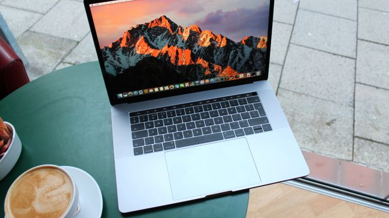

CPU: Intel Core i7 | Graphics: AMD Radeon Pro 450 – 460 | RAM: 16GB | Screen: 15.4-inch Retina (2,880 x 1,800) LED-backlit IPS | Storage: 256GB – 2TB PCIe SSD
For media production, the 15-inch MacBook Pro has been the go-to for many years now. Slight design changes have annually accompanied CPU upgrades, making every new MacBook Pro that comes out a subtle rewrite of its predecessor. The 2016 MacBook Pro, however, saw Apple make changes – for better or worse – that dramatically altered its utility. To Apple outsiders, the decision to omit all the standard USB ports and SD slots in favor of four USB-C connections is baffling. For the fans, however, it’s a strategic means of future-proofing. Regardless of how you feel about the concessions, the MacBook Pro’s most alluring invention is the Touch Bar, which replaces the function keys and, in turn, introduces a layer of functionality only possible with the latest MacBook Pro.

MacBook Pro